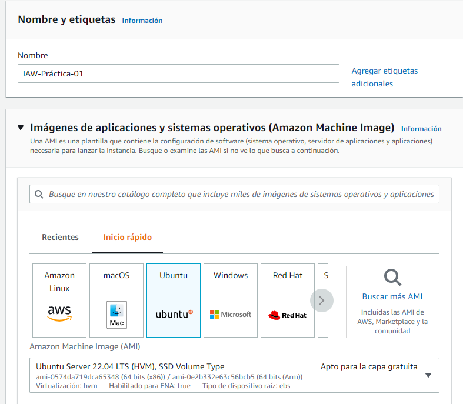
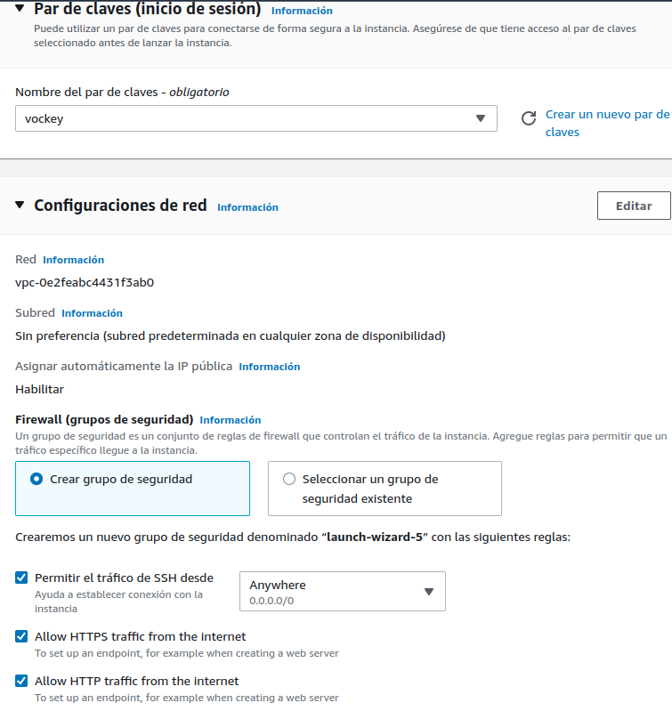
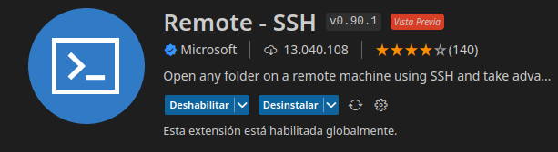
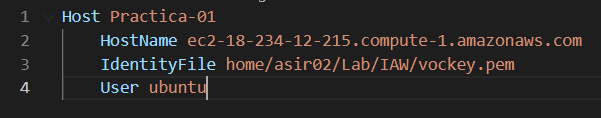
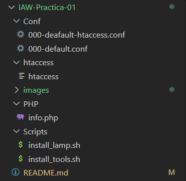
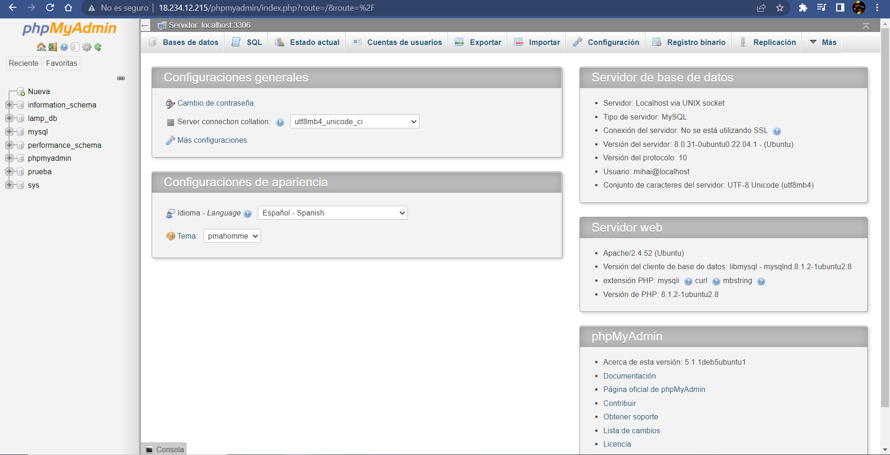
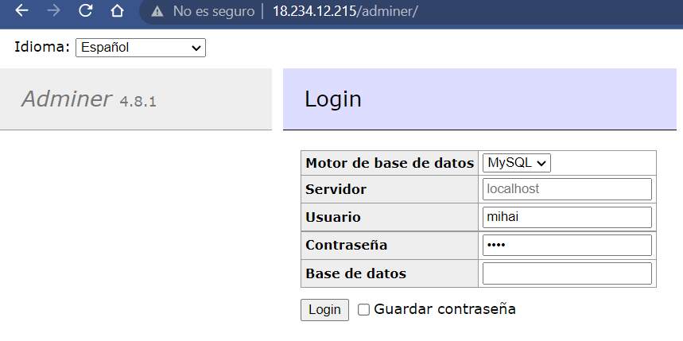
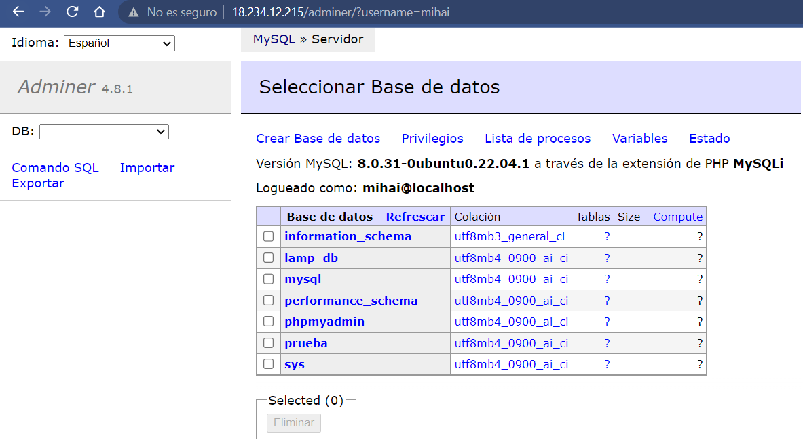
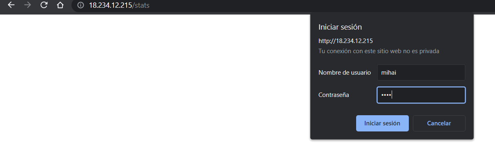
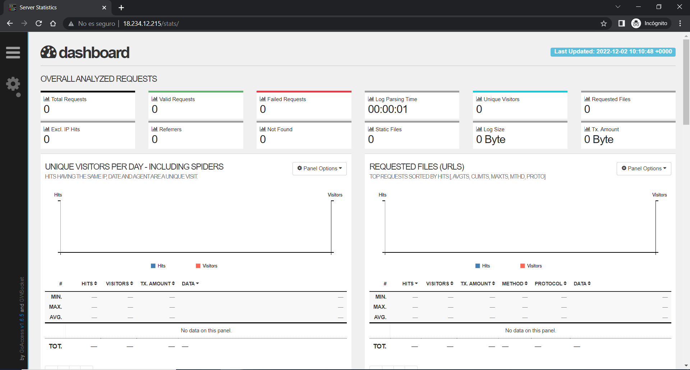

Práctica 1
IAW-Practica-01
Práctica 01 del módulo de IAW
Implementando la nueva Instancia:
Lo primero que haremos será entrar en dentro del panel EC2 en AWS Academy para poder lanzar la nueva instancia.
La configuración de la instancia será la siguiente:
1: Ponemos el nombre a la máquina y seleccionamos como SO el Ubuntu

2: Seleccionamos el par de claves que hemos usado anteriormente vockey, aunque se podría crear otro par de claves si queremos.

3: Antes de acabar con la configuración de la instancia tendremos que ponerle una capacidad de RAM de 4GB para que la máquina vaya de forma más fluida.

4: Como último paso para acabar con la configuración de la instancia, haremos que la instancia que hemos creado tenga una IP Elástica, aunque este paso no es estrictamente necesario.
Implementación de la Instancia en Visual Studio Code
Previamente a la implementación de la instancia tendremos que instalar en el Visual Studio la extensión del Explorador Remoto de Microsoft

1: Una vez instalada la extensión añadiremos el acceso a la máquina dentro de la configuración de los destinos SSH.

2: Hecho esto ya podremos conectarnos a la máquina de RHEL remotamente desde el Visual Studio. Ahora clonaremos el repositorio que hemos creado en GitHub para poder empezar a trabajar. Para clonar el repositorio tendremos que copiar el enlace del repositorio y ejecutar el siguiente comando:
git clone https://github.com/Mihai95102/IAW-Practica-01.git
Empezando a automatizar los scripts
Para empezar a trabajar, primero crearemos esta estrctura dentro del directorio:

Empezamos a crear el script de automatización para la instalación de las herramientas LAMP
El script install_lamp.sh contendrá lo siguiente:
#!/bin/bash
set -x
# Actualizamos los repositorios
apt-get update
# Actualizamos los paquetes nuevos
# apt-get upgrade -y
# Instalamos el servidor web apache
apt-get install apache2 -y
# Instalamos el sistema gestor de BD
apt-get install mysql-server -y
# Instalamos los módulos de PHP
apt-get install libapache2-mod-php php-mysql -y
# Copiamos el archivo para ver que se ha instalado
cp ../PHP/info.php /var/www/html
El siguiente script y último que creamremos será uno el que instalaremos las herramientas de PHPMyAdmin, Adminer y GoAcess.
El script de install.tools.sh será el siguiente:
#!/bin/bash
set -x
# Variables de configuración
PHPMYADMIN_APP_PASSWORD=hola
STATS_USER=mihai
STATS_PASSWORD=hola
DB_USER=mihai
DB_PASSWORD=hola
# Configuramos las respuestas para hacer una instalación desatendida de phpMyAdmin
echo "phpmyadmin phpmyadmin/reconfigure-webserver multiselect apache2" | debconf-set-selections
echo "phpmyadmin phpmyadmin/dbconfig-install boolean true" | debconf-set-selections
echo "phpmyadmin phpmyadmin/mysql/app-pass password $PHPMYADMIN_APP_PASSWORD" | debconf-set-selections
echo "phpmyadmin phpmyadmin/app-password-confirm password $PHPMYADMIN_APP_PASSWORD" | debconf-set-selections
# Creación de la base de datos y el usuario de BD
mysql -u root <<< "DROP USER IF EXISTS $DB_USER"
mysql -u root <<< "CREATE USER IF NOT EXISTS '$DB_USER'@'%' IDENTIFIED BY '$DB_PASSWORD'"
mysql -u root <<< "GRANT ALL PRIVILEGES ON *.* TO $DB_USER@'%'"
# Instalación de phpMyAdmin
apt install phpmyadmin php-mbstring php-zip php-gd php-json php-curl -y
# Instalación de Adminer:
# Descargamos el archivo de Adminer
wget https://github.com/vrana/adminer/releases/download/v4.8.1/adminer-4.8.1-mysql.php
# Creamos un directorio para Adminer
mkdir -p /var/www/html/adminer
# Renombramos el archivo
mv adminer-4.8.1-mysql.php /var/www/html/adminer/index.php
# Instalación de GoAccess:
# Añadimos el repositorio de GoAccess
echo "deb http://deb.goaccess.io/ $(lsb_release -cs) main" > /etc/apt/sources.list.d/goaccess.list
# Añadimos la clave pública de GoAccess en nuestra máquina
wget -O - https://deb.goaccess.io/gnugpg.key | sudo apt-key add -
# Actualizamos los repositorios
apt update
# Instalamos GoAccess
apt install goaccess -y
# Creamos el directorio stats
mkdir -p /var/www/html/stats
# Modificamos el propietario y el grupo del directorio /var/www/html
chown www-data:www-data /var/www/html -R
# Ejecutamos GoAcces en segundo plano
sudo goaccess /var/log/apache2/access.log -o /var/www/html/stats/index.html --log-format=COMBINED --real-time-html --daemonize
# Control de acceso a un directorio con .htaccess:
# Creamos un directorio para guardar el archivo de claves
mkdir -p /etc/apache2/claves
# Creamos un usuario/password/en un archivo .htpasswd
sudo htpasswd -bc /etc/apache2/claves/.htpasswd $STATS_USER $STATS_PASSWORD
# Copiamos el archivo de configuración de Apache
cp ../Conf/000-default.conf /etc/apache2/sites-available
# Reiniciamos el servicio de Apache
systemctl restart apache2
# Control de acceso a un directorio con .htaccess
# Creamos un usuario/password/en un archivo .htpasswd
sudo htpasswd -bc /etc/apache2/claves/.htpasswd $STATS_USER $STATS_PASSWORD
# Copiamos el archivo htaccess en /var/www/html/stats
cp ../htaccess/htaccess /var/www/html/stats/.htaccess
# Copiamos el archivo de configuración de Apache
cp ../Conf/000-default-htaccess.conf /etc/apache2/sites-available/000-default.conf
# Reiniciamos el servicio de Apache
systemctl restart apache2
Una ejecutemos estos scripts podremos comprobar que la instalación se ha realizado correctamente:
1: Para comprobar que el servidor de PHPMyAdmin funciona tendremos que acceder a él con la IP de la máquina, “18.234.12.215/phpmyadmin”.

Una vez accedemos con nuestro usuario y contraseña podemos ver que tenemos acceso a todas las bases de datos del sistema.

2: A continuación comprobaremos que podemos acceder al servidor de Adminer con el mismo usuario y contraseña que hemos usado para PHPMyAdmin. Para acceder al servidor de Adminner escribiremos en el navegador “18.234.12.215/adminer”.

Una vez accedemos con nuestro usuario y contraseña podemos ver que tenemos acceso a todas las bases de datos del sistema.

3: Finalmente entraremos al servidor de GoAcess que registra la actividad que hay en el servidor. Para acceder a el con nuestro usuario y contraseña ponemos en el navegador “18.234.12.215/stats”.

Una vez accedamos podemos ver las estadísticas del servidor.
